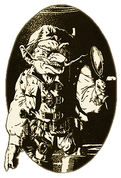
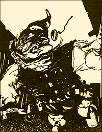

| |
Gnóm játékos karakterek
Új játszható
faj a Warhammer szerepjátékhoz
A Warhammer szerepjátékban eddig csak négy
játszható faj volt megtalálható: az ember, a törpe,
az elf és a félszerzet. Most ezt a szûk lehetõséget
szeretnénk bõvíteni a gnóm személyével, aki
igen jópofa színt vihet minden Óvilágon
kalandozó csapat életébe.
|
A gnómok kicsivel kevesebben vannak, mint
a félszerzetek, viszont mindenhol megtalálhatóak,
Kislevtõl a Birodalmon át egészen Albionig. A
gnómok társadalmának rengeteg variációja van,
ez fõleg attól függ, hogy mekkora a közösség
és hol élnek (egy norscai gnóm faluban például
egészen mások lehetnek a szokások, mint
Albionban vagy Estáliában), de mivel a legtöbb
kalandozó-csapat a Birodalomban “mászkál”,
ezért csak az itt élõ gnómok szokásait részletezzük.
Gnómok a Birodalomban
A Birodalmon belül a gnómok általában
klánokban vagy ahhoz hasonló társadalmi szervezõdésekben
élnek, általában tiszteletben tartott fajként.
Természetük mások számára igen nehezen
elviselhetõ, hiszen jóindulatuk ellenére
rettentõen fel van vágva a nyelvük, és
gunyoros, néha szarkasztikus módon mindent és
mindenkit kritizálnak. Büszkeségük mellett
valószínûleg ennek köszönhetõ,
hogy nem érzik jól |
 |
|
|
magukat
más fajú lények társaságában (természetesen
a kalandozók kivételek), és eléggé zárkózottan
élnek, bár ez a visszavonultság meg sem közelíti
például az Óvilágon élõ erdei elfek rejtõzködését. |
A gnóm házalók nem jelentenek ritka látványt
a Birodalomban, a gnóm kovácsok és mérnökök
néha nagyobb megbecsülést kapnak, mint törpe
riválisaik – bár lehet, hogy ebben fürge
nyelvük is nagy szerepet játszik. Mérhetetlen
szellemességük és csípõs modoruk miatt 1143-óta
a gnómok, mint a császár hivatalos udvari
bolondjai szerepelnek, és mivel ez késõbb
hagyományossá vált, a jelenlegi császár, Karl
Franz udvarában is megtalálhatjuk a “kötelezõ”
gnóm bolondot.
A gnómok általában saját közösségekben
élnek, amelyek gyakran zártak más fajú lények
elõtt. Ezek barlangrendszerek vagy földbe ásott
üregek, melyek mindenhol megtalálhatóak a
Birodalom területén és az alatt. A gnómok
szeretete a halak és a halászat iránt legendás,
bár keséssé közismert tény, ebbõl kifolyólag
szinte nincsen olyan településük, amelynek a közelében
ne lenne megtalálható valamilyen halászatra
alkalmas tó vagy folyóvíz, és amennyiben ez a
föld alatt található, a gnómok még jobban örülnek
neki.
A Birodalom területén Glimdwarrow a
legnagyobb településük, amely a Tükör Mocsárnál
található, és mintegy ezer lelket számlál.
Ennek a közösségnek is, akárcsak a többi gnóm
falunak megvan a maga – kívülállók számára
szinte teljesen követhetetlen – hierarchiája.
Még közeli rokonaik, a törpék számára is
szinte kibogozhatatlanul bonyolultnak tûnik a
megszámlálhatatlan gnóm szokás, viselkedésfajta
és a rendkívül összetett etikett. Minden gnóm
településen megtalálható a klánfõnök, aki
tulajdonképpen a közösség uralkodója, egy másik
vezetõ, aki a vallás és a hit dolgait tartja kézben,
egy technikusmester, aki a bányászat és a fémmegmunkálás
fölött õrködik, valamint a Tanok Mestere,
akinek a feladata a közösség titkainak õrzése,
a tudás átadása, a történelem följegyzése,
továbbá az etikett és az egyéb rituálék óramûpontos
betartása. Ezen kívül sok faluban van varázslómester
is, aki az illuzionista mágiát tanítja a
tanoncoknak. Mindemellett természetesen minden gnóm
település elengedhetetlen lakói a harcosok,
akik õrzik a szülõföldjüket.
A gnóm karakterprofil
Amennyiben a mesélõ úgy dönt, hogy a
csapatban lehet gnóm játékos karakter, a következõ
táblázat alapján adhatjuk meg kezdõ profilját
(természetesen a mesélõ felülbírálhatja a
kockadobásokat abban az esetben, ha azok nagyon
eltérnek a kaland folyamatától):
| M |
D3 + 2 |
A |
1 |
| Ws |
2D10 + 30 |
Dex |
2D10 + 20 |
| Bs |
2D10 + 10 |
Ld |
2D10 + 30 |
| S |
D3 + 1 |
Int |
2D10 + 20 |
| T |
D3 |
CI |
2D10 + 20 |
| W |
D3 + 4 |
WP |
2D10 + 30 |
| I |
2D10 + 20 |
Fel |
2D10 + 20 |
A gnómok felépítése és a gnóm karakter
A
gnómokat a Birodalomban gyakran emlegetik –
persze sohasem elõttük – “kicsi” törpéknek,
ami utal a két faj közt fennálló kétségtelen
rokonságra, hiszen hasonló a testfelépítésük
és hosszú, bozontos szakálluk van. Átlagosan tíz
hüvelykkel alacsonyabbak a törpéknél, és említést
érdemel nagy gumós orruk is. Ügyesebbek és
gyorsabbak, mint magasabb rokonaik, ebbõl ered
ellenszenvük az egyéb fajok iránt, akik gyakran
megvetõleg csak “tolvaj pöttömöknek”
nevezik õket. Számos gnómnak természetadta
tehetsége van az illúziókhoz, és sokan
mesterei e mágiafajtának, továbbá a kovácsmesterségnek,
és a kézmûvességnek. Elbûvölõ szerkezeteket
képesek létrehozni és imádják a mindenféle mütyürkéket
fõleg, ha azok valamilyen tréfára szolgálnak.
Néhányan az emberek között élnek, és igen jól
profitálnak a gnóm-készítésû szerkentyûk és
mûtárgyak értékesítésébõl.
|
 |
Imádják a tréfát, szerintük nincs jobb
dolog, mint egy jó nevetés, kiváltképp, ha másnak
a rovására történik. Ennek ellenére egyetlen
gnóm sem tûri el, hogy akár a faját, akár
valamelyik hozzátartozóját sértõ megjegyzéssel
illessék vagy szomorúságot okozzanak a
szeretteinek. Igen hirtelen haragúak és nehéz
õket kiengesztelni.
Mivel igen társas lények, akik
ragaszkodnak az otthon melegéhez, nem igazán töltenek
el hosszabb idõt a szabadban, emiatt a gnómok
nem indíthatnak erdõjáró karriert, és ezért
az Erdõjáró alap Karrier táblázatból (Ranger
Basic Carrier Skill Chart; WFRP alapkönyv 18.
oldal) nem választhatnak. A
patkányfogó (Rat Catcher) és a talajkutató (Prospector)
kasztokat a harcosok karrierlistájából dobhatják
ki. |
| Nyelv: |
Ghassaly – A Khazalid (Törpe)
egyik gnóm dialektusa |
| Éjszakai látás: |
30 yard |
| Jellem: |
Jó – Semleges |
| Magasság: |
Férfi: 3’6”+d8” Nõ:
3’4”+D8” |
| Pszichológia: |
Gyûlölik a goblinokat |
| Életkor: |
A karakter életkorát 8D10 dobással
határozzuk meg, ha fiatalabbat szeretnénk; ha érettebbet,
8D20-szal. Ha az eredmény kevesebb, mint 16,
dobjunk még egyet, és ezt adjuk hozzá az elõzõ
értékhez, mert a gnóm kalandozó karakter életkora
16 és 175 év között lehet. |
| Sorspontok: |
D3 |
Jártasságok
A
következõ lépés az induló karakter jártasságainak
meghatározása. Dobjunk 1D4-et, és adjuk hozzá
az életkorból adódó módosítókat (pl. ha a
gnóm karakter 76 éves, akkor 1D4+2 az eredmény,
ebbõl kapja a kötelezõ jártasságokat is).
| Életkor |
Jártasságok |
Életkor |
Jártasságok |
| 16-20 |
- |
101-110 |
+1 |
| 21-30 |
- |
111-120 |
+1 |
| 31-40 |
+1 |
121-130 |
- |
| 41-50 |
+1 |
131-140 |
- |
| 51-60 |
+1 |
141-150 |
- |
| 61-70 |
+2 |
151-160 |
-1 |
| 71-80 |
+2 |
161-170 |
-1 |
| 81-90 |
+2 |
171-175 |
-2 |
| 91-100 |
+1 |
|
|
Minden gnóm rendelkezik kovácsmesterség
(Smithing) jártassággal. A továbbiakban választani
kell a mókázás (Jest), bányászat (Mining)
vagy a kõfaragás (Stoneworking) jártasságok közül,
majd a fennmaradókat D100 segítségével a
megfelelõ karrierosztály kidobjuk. Az egyes jártasságok
leírását a WFRP alapkönyv 45-58-dik oldalán
találjuk meg. Ha valamelyiket kétszer dobjuk ki,
újat kell dobni.
Jártasságok listája
| Harcos |
Csavargó |
Akadémista |
Jártasság |
| 01-05 |
01-08 |
01-04 |
Kiváló
hallás (Acute Hearing) |
| 06-12 |
09-12 |
05-08 |
Kétkezes
(Ambidextrous) |
| |
13-19 |
09-16 |
Üres
fecsegés (Blather) |
| |
20-27 |
|
Megvesztegetés
(Bribery) |
| |
|
17-24 |
Titkosírás
(Cryptography) |
| 13-16 |
28-31 |
25-28 |
Tánc (Dance) |
| 17-24 |
|
|
Lefegyverzés
(Disarm) |
| 25-31 |
|
|
Hárítás
(Dodge Blow) |
| 32-38 |
32-36 |
29-32 |
Tökéletes
látás (Excellent Vision) |
| 39-43 |
37-40 |
|
Halászat
(Fish) |
| |
41-48 |
33-39 |
Menekülés
(Flee!) |
| 44-50 |
|
|
Fürgelábú
(Fleet footed) |
| |
|
40-46 |
Drágakõmûvesség
(Gem cutting) |
| |
49-56 |
47-53 |
Alkudozás
(Haggle) |
| 51-54 |
57-64 |
54-57 |
Mókázás
(Jest) |
| 55-60 |
|
|
Villámgyors
reflexek (Lightning Reflexes) |
| |
65-71 |
58-61 |
Szerencse
(Luck) |
| 61-65 |
72-76 |
62-65 |
Éjszakai
látás (Night Vision)* |
| |
|
66-72 |
Tájékozódás
(Orientetion) |
| 66-69 |
|
73-80 |
Írás-Olvasás
(Read-Write) |
| 70-74 |
77-84 |
81-84 |
Falmászás
(Scale Sheer Surface) |
| |
|
85-88 |
Csendes
mozgás városban (Silent Move Urban) |
| 75-80 |
85-89 |
89-92 |
Éneklés
(Sing) |
| 81-87 |
90-97 |
|
Hatodik
érzék (Sixth Sense) |
| |
|
93-00 |
Matekzseni
(Super Numerate) |
| 88-94 |
98-00 |
|
Nagyon
ellenálló (Very Resilent) |
| 95-00 |
|
|
Nagyon
erõs (Very Strong) |
|
| * Mivel a gnóm
karakter alapból rendelkezik az éjszakai
látás képességgel, ha újra kidobja, a
mesélõ emelheti ennek az értékét 30
yardról 45 yardra. Ez a szabálymódosítás
a többi félemberi fajra is alkalmazható. |
Induló karrier meghatározása
Ha a játékos kiválasztotta a karaktere
karrierosztályát (harcos, csavargó vagy akadémista),
ki kell dobnia az induló karriert is. Lásd a
lenti táblázatot. Megjegyzendõ, hogy némelyik
karriert egyes jártasságok miatt (pl. lovaglás
(Ride)) nem feltétlenül a gnómoknak találták
ki, ilyenkor a mesélõ szava a döntõ.
| Harcos |
Csavargó |
Akadémista |
Induló
karrier |
| |
|
01-10 |
Alkimista tanoncs (Alchemist's
Apprentice) |
| |
|
11-20 |
Kézmûves novendék (Artisan's
Apprentice) |
| |
01-06 |
|
Kerítõ (Bawd) |
| |
07-16 |
|
Koldus (Beggar) |
| 01-07 |
|
|
Testõr (Bodyguard) |
| |
|
21-30 |
Mérnök (Engineer) |
| |
17-27 |
|
Elõadó (Entertainer) |
| |
28-33 |
|
Útonálló (Footpad) |
| |
34-42 |
|
Szerencsejátékos (Gambler) |
| |
43-51 |
|
Sírrabló (Grave Robber) |
| |
|
31-35 |
Hipnotizõr (Hypnotist) |
| |
|
36-40 |
Beavatott (Initiate) |
| |
52-59 |
|
Börtönõr (Jailer) |
| |
60-68 |
|
Bolond (Jester) (Új
karrier, leírást lásd alább) |
| 08-14 |
|
|
Munkás (Labourer) |
| 15-22 |
|
|
Zsoldos (Mercenary)1 |
| 23-29 |
|
|
Polgárõr (Militiaman)1 |
| 30-34 |
|
|
Nemes (Noble)1 2 |
| 35-42 |
|
|
Törvényen kívüli
(Outlaw)1 |
| |
69-78 |
|
Házaló (Pedlar) |
| |
|
41-49 |
Gyógyszerész (Pharmacist) |
| |
|
50-54 |
Fizikus növendék (Physican's
Student) |
| 43-50 |
|
|
Veremharcos (Pit Fighter) |
| 51-59 |
|
|
Talajkutató (Prospector) |
| 60-65 |
|
|
Bajvívó (Protagonist)1 |
| |
79-85 |
|
Történetmondó (Reconteur) |
| 66-73 |
|
|
Patkányfogó (Rat Catcher) |
| |
|
55-63 |
Írnok (Scribe) |
| |
|
64-70 |
Látnok (Seer) |
| 74-80 |
|
|
Szolga (Servant)1 |
| 81-88 |
|
|
Csempész (Smuggler) |
| |
|
71-80 |
Garabonciás (Student)3 |
| |
86-94 |
|
Tolvaj (Thief) |
| |
95-00 |
|
Kriptafosztogató (Tomb
Robber) |
| |
|
81-90 |
Kereskedõ (Trader) |
| 89-96 |
|
|
Alagútharcos (Tunnel
Fighter) |
| 97-00 |
|
|
Õrszem (Watchman) |
| |
|
91-00 |
Varázslóinas (Wizard's
Apprentice) |
1 A mesélõre
bízzuk, hogy engedi-e a gnóm karaktert
lovaglás (Ride) jártasság nélkül a
jelzett karrierekbe. Esetleg megkötéseket
alkalmazhat (pl. csak pónin lovagolhat).
2 Ez a karrier csak a gnóm
közösségben érvényes, a Birodalomban
nincsenek gnóm nemesek.
3
A garabonciás vagy az emberek iskoláiban
tanul, vagy a gnóm Tanok Mesterének növendéke
(gnóm megfelelõje a Tudós (Scholar)
karriernek). |
Új karrier - Bolond
|
|
A
bohócokat a birodalomban élõ gazdagabb, elõkelõbb
családok foglalkoztatják évszázadok óta. Az
emberek politikai intrikái és kettõs játékai
közepette olyan figurát jelképez, aki nem tör
politikai babérokra. A gnómokat teljesen hidegen
hagyják a Birodalom belsõ csatározásai, ezért
ideálisak erre a szerepre. Ritkán maradnak |
|
hosszabb ideig szolgálatban, hamar megunják az
emberek örökké álszent és komoly társaságát,
vagy épp egy nagyhatalmú fõúr megsértése
miatt kénytelenek távozni. Az elszökött
bolondokat a nemesek a legritkább esetben képesek
megtalálni. |
|
|
| |
M |
Ws |
Bs |
S |
T |
W |
I |
A |
Dex |
Ld |
Int |
Cl |
Wp |
Fel |
|
Bolond |
|
+10 |
+10 |
|
|
+1 |
+10 |
|
+20 |
+10 |
|
|
|
+20 |
Csak gnóm karakterek indulhatnak
bolondként, más fajok csak az elõadó (Entertainer)
és trubadúr (Troubadur) karrier befejezése után.
| Jártasságok |
Felszerelés |
Akrobatika (Acrobatics)
Bohóckodás (Clown)
Tánc (Dance)
Mókázás (Jest)
Zsonglõrködés (Juggle)
50% esély Arcjátékra (Mimic)
25% esély Apró tárgyak elrejtésére (Palm
Object)
25% esély Elmésségre (Wit)
10% esély Hasbeszélésre (Ventriloqism)
10% esély Hajlékony végtagokra (Contortionist) |
Bolondbot
(Jester's stick)
Ruha (Quartered Clothing
6 fagolyó (6 wooden balls)
Kötél 10 yard (Rope 10 yard)
|
|
|
| Karrierek |
Karrier kijáratok |
Alap
Elõadó (Trubadúr)
Kobzos (Minstrel) |
Alap
Elõadó (bármelyik)
Kobzos (Minstrel)
Történetmondó (Raconteur) |
|
|
|
Fejlesztett
Sarlatán (Charlatan)
Kém (Spy) |
Ringil - A kovácsok
és a bolondok istene a gnómok hite szerint
Leírás: A gnóm
panteon fõistene, a közösségek védelmezõje,
a kovácsmûvészetek és a mókázás megtestesítõje.
Általában idõsebb, vigyorgó gnóm férfi képében
ábrázolják, jobbjában kalapáccsal, bal kezében
horgászbottal.
Jellem: Semleges.
Szimbólum: Általában
egy stilizált bohócfej boton.
Kultuszának területe: A
gnómok egész Óvilágon gyakorolják Ringil hitét,
és néhány törpe közösség, mint Rukhot, a
kovácsok istenét tiszteli.
Templomai: Minden gnóm
közösségnek van Ringil temploma, amely legtöbbször
egy nagy barlang, lehetõleg természetes. A
templom belsejét, ami klángyûlések helyéül
is szolgál, varázslattal világítják meg (Glowing
Lights).
Barátok és ellenségek: Ringil
kultusza barátságos viszonyt tart fenn a törpe
panteon hívõivel, és szívélyes kapcsolatban
áll a félszerzetek fõistennõjével, Esmeraldával.
Az elfek és az emberek isteneirõl szinte tudomást
sem vesz, a gnómok és a törpék ellenségeinek
hite pedig számára gyûlöletes.
Szent napok: Kisebb
fesztiválok minden hó elsõ napján, nagyobb ünnepek
háromhavonta, ezek neve Bolondok napja.
A hit elõfeltétele: Minden
felnõtt gnóm Ringil követõjévé válhat.
Elõírások: Ringil
minden tanonca és papja köteles:
-
Kiállni egy gnóm
mellett, akit sérelem ért.
-
Minden jövedelmének
10%-át beszolgáltatni Ringil kultuszának.
-
A gnóm kovácsok munkáit
tiszteletben kell tartania, s megvédeni becsületüket.
-
Fajtársai rejtekhelyét
titokban tartania.
Varázslatok: Használhatnak
Piti mágiát (Petty Magic) és Illuzionista varázslatokat
(Illusion Spells).
Jártasságok: A papok
megszokott jártasságai, ezen kívül Ringil követõinek
fel kell venniük minden szinten az alábbi jártasságok
közül egyet: értékbecslés (Evaluate), alkudozás
(Haggle), csapdaépítés (Set Trap), csapda
felfedése (Spot Trap).
Ítéletek: Ringil szemében
bûnnek számít egy vakmerõ vagy veszélyes tréfa,
valamint tiltott, illetve bûnt segítõ tárgy
elkészítése.
Áldások: Ringil által
megbecsült jártasságok a kõfaragás (Stoneworking),
mérnök (Engineer), mókázás (Jest), kovácsmesterség
(Smithing). Kedvelt jártasságpróbái a blöff (Bluff),
az alkotás (Construct), a becslés (Estimate) és
a zsebtolvajlás (Pick Pocket).
fordította: Khitomer (Troll
magazin, II. évf. 11. szám)
A cikk az
Apocrypha Now kiegészítõ Gnome PCs
címû fejezete alapján
készült
|
|